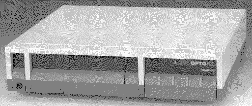

Die CD ROM Laufwerke CDAR 504 und CDAR 505
Das CDAR 504 wurde 1989 dem Publikum vorgestellt und im Lieferumfang
war eine CD ROM mit den ersten 180 PD-Disketten der Zeitschrift ST-
Computer aus dem Hause Maxon. Dieses Laufwerk bescherte damals den
Atari Anwendern die allererste Version von Metados, welches heute in
der Version 2.70 vorliegt. Das Laufwerk selber wurde anscheinend
komplett von Chinon für Atari gefertigt, die Laserelektronik basiert
auf einem Chipsatz von Hitachi. Audio CDs beherrschte das Gerät von
anfang an und die Lesegeschwindigkeit bei Daten CD ROMs liegt bei
ungefähr 50 Kilobyte pro Sekunde (also 0,3-fach Speed). Die abnehm-
bare Fernbedienung war für die Audio Funktionen und auf der Rück-
seite sitzen 2 19polige ACSI Buchsen und ein ACSI ID Schalter normal
auf ID 6 eingestellt).

Ein Blick in das inneres des CDAR 504 bei abgenommenen Deckel, deut-
lich erkennbar die Lasermechanik (links im Bild) und die Elektronik-
baugruppen (rechts und hinten im Bild).

weiterblättern
Kapitel Die CD ROM Laufwerke CDAR 504 und CDAR 505, Seite 1